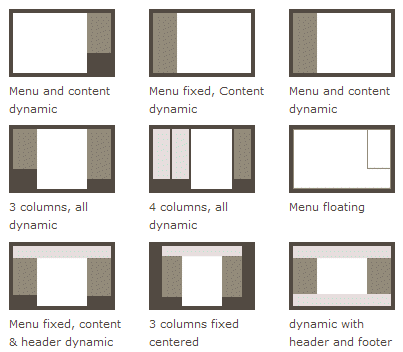

个人博客
静态简历
动态简历
简历制作
简介
1.HTML基础
1.1.HTML标签常用整理
1.2.HTML标签常用属性和CSS样式
2.CSS布局
2.1.圣杯+双飞翼布局
2.1.1.圣杯布局
2.1.2.双飞翼布局
2.2.Flex弹性布局
2.2.1.概论
2.2.2.Flex布局是什么
2.2.3.Flex基本概念
2.2.4.Flex容器属性
2.2.5.Flex项目属性
2.3.Grid网格布局
2.3.1.简介
2.3.2.常用术语
2.3.3.Grid容器属性
2.3.4.Grid项目属性
2.3.5.经典的三列布局
2.3.6.更实用的网格布局
3.其他
3.1.静态资源压缩
3.2.gh-pages 部署
3.3.webpack的使用
3.4.GitBook的简单使用
本书使用 GitBook 发布
2.2.1.概论
Flex应用场景
网页布局（layout）是 CSS 的一个重点应用。
Flex应用场景
资源来源于网络
网页布局（layout）是 CSS 的一个重点应用。

布局的传统解决方案，基于
盒状模型
，依赖
display
属性 +
position
属性 +
float
属性。它对于那些特殊布局非常不方便，比如，
垂直居中
就不容易实现。
2009年, W3C提出一个新方案: Flex布局
可简更加的简单的实现,响应式的布局, 并且得到了几乎所有浏览器的支持, 所以请放心大胆的用吧
所以, Flex必将成为未来布局的首选方案, 下节课咱们就来详细介绍一下它的基本语法知识
results matching "
"
No results matching "
"
results matching "
"
No results matching "
"